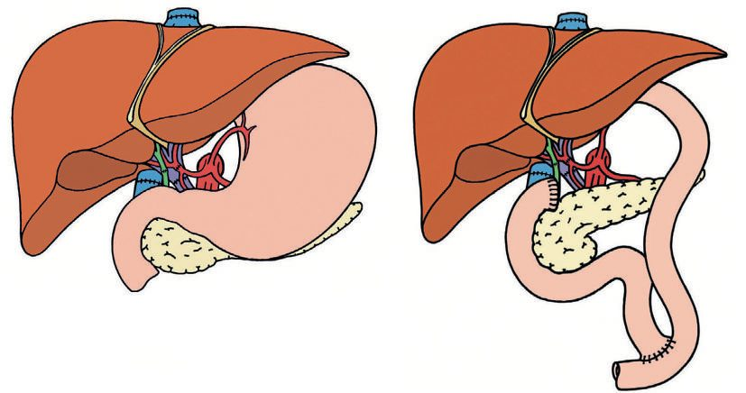

Liver Transplantation
Summary
- The liver is the immunological exception among transplanted organs, ABO compatibility is generally required for all transplants except the liver [1], and it is also the organ least prone to acute rejection, so immunosuppression can be tapered relatively quickly [2].
- What it is not forgiving about is its arterial supply: the biliary system depends on hepatic artery blood supply [1], which is why hepatic artery thrombosis is the complication that costs the graft.
- This page covers indications and their scoring, the operation, the vascular and biliary complications, rejection, and results.
Definition
The MELD score uses creatinine, INR and bilirubin to predict whether a patient with cirrhosis will benefit more from transplantation than from medical therapy; a MELD above 15 indicates benefit from transplantation [1].
The Child-Pugh score monitors disease progression using bilirubin, albumin, prothrombin time prolongation, ascites and encephalopathy grade, scored 1 to 3 points each; patients in class C should be referred for transplantation [2].
Experimental canine liver transplantation is usually credited to Welch (1955) and Cannon (1956) though Staudacher described it in 1952; Starzl's human trials began in 1963, a run of deaths forced a 3.5-year voluntary moratorium, the first success came in 1967, and only 20% of his first 170 Colorado recipients survived 5 years; cyclosporine (England, 1978) with prednisone, tacrolimus in the 1990s, standardised procurement and cold preservation, choledochocholedochostomy or Roux-en-Y choledochojejunostomy, split and living donor grafts, portosystemic shunting and critical care raised 1-year survival from about 30% to about 85%, yet perioperative and 1-year mortality remain among the highest of any operation [3].
Pathophysiology
Hepatitis C reinfects essentially all grafts, it is the disease most likely to recur in the new liver allograft [1]. Hepatitis B reinfection is reduced to 20% with hepatitis B immunoglobulin and lamivudine given after transplantation [1].
Macrosteatosis in the donor liver predicts primary non-function. Extracellular fat globules in the allograft are a risk factor, and if 50% of the cross-section of a potential donor liver is macrosteatotic there is a 50% chance of primary non-function [1].
A living donor liver regenerates 100% in 6 to 8 weeks [1].
Clinical features
- Early and late hepatic artery thrombosis produce entirely different pictures.
- Early thrombosis is the commonest early vascular complication and causes rising liver function tests, reduced bile output and fulminant hepatic failure; late thrombosis instead results in biliary strictures and abscesses, without fulminant failure [1].
- Abscesses most commonly arise from late chronic hepatic artery thrombosis [1].
The Oxford Handbook adds the biochemical signature: hepatic artery thrombosis usually presents as metabolic acidosis with rising serum lactate [2].
Acute rejection is T-cell mediated against blood vessels and usually occurs in the first 2 months [1]. Clinically there is fever, jaundice and reduced bile output; the labs show leucocytosis, eosinophilia, raised liver function tests, raised total bilirubin and raised prothrombin time; the pathology shows portal triad lymphocytosis, endotheliitis with a mixed infiltrate, and bile duct injury [1].
Chronic rejection gives disappearing bile ducts from antibody and cellular attack, producing gradual bile duct obstruction with a rising alkaline phosphatase and portal fibrosis [1].
Cholangitis is distinguished on histology by neutrophils around the portal triad rather than a mixed infiltrate [1], the point of difference from acute rejection.
Portal vein thrombosis presents differently by timing: early with abdominal pain, late with upper gastrointestinal bleeding and ascites, and it may be asymptomatic [1]. IVC stenosis or thrombosis is rare and causes oedema, ascites and renal insufficiency [1].
Cirrhosis itself is not an indication; decompensation is, encephalopathy (sleep disturbance and depression, then somnolence, confusion and coma; ammonia from enterocyte glutamine and colonic bacteria is an unreliable marker, worsened by GI bleeding and infection), ascites (a transudate with serum–ascites albumin gradient above 1.1 g/dL, managed by sodium restriction and diuretics, then large-volume paracentesis and TIPS, the latter contraindicated by significant encephalopathy, advanced liver disease, heart failure, renal insufficiency and severe pulmonary hypertension), spontaneous bacterial peritonitis (fever, pain, ascitic neutrophils ≥250/mm³, empirical third-generation cephalosporin for the Gram-negative aerobes such as E. coli that predominate), portal hypertensive bleeding (30% mortality per event, a third of cirrhosis deaths, only 50% stop spontaneously; vasopressin and octreotide, endoscopic sclerotherapy and banding, then Sengstaken–Blakemore tamponade and emergency TIPS, and lastly surgical shunt, oesophageal transection or Sugiura devascularisation, with β-blockers for prevention) and hepatorenal syndrome (splanchnic vasodilatation reducing renal perfusion; oliguria under 500 mL/day with urine sodium under 10 mEq/L; ATN, drug toxicity and chronic renal disease excluded; octreotide, midodrine and vasopressin analogues; often reversed by transplantation even after dialysis dependence) [3].
Aetiology
Chronic hepatitis C is the commonest reason for liver transplantation in adults [1].
The diseases suitable for transplantation are chronic liver disease, alcoholic liver disease, non-alcoholic fatty liver disease, primary biliary cirrhosis, primary sclerosing cholangitis excluding cholangiocarcinoma, and hepatitis B or C cirrhosis; malignancy such as hepatocellular carcinoma in a cirrhotic liver in selected cases; fulminant hepatic failure from acute viral hepatitis, drug reactions or paracetamol overdose; and inborn errors of metabolism such as Crigler-Najjar syndrome type 1 [2].
Contraindications are current alcohol abuse and acute ulcerative colitis [1]. Portal vein thrombosis is not a contraindication [1].
Hepatocellular carcinoma can still be considered for transplantation if there is no vascular invasion, extrahepatic spread or metastasis, but not cholangiocarcinoma [1]. Neoadjuvant chemotherapy with tumour ablation or transarterial chemoembolisation is usually given first [1]. The resectability decision turns on Child class: resectable liver cancer with Child's A proceeds to resection, whereas resectable disease with Child's B or C goes for transplant evaluation [1].
Alcohol recidivism runs at 20% [1].
Indications and disease-specific considerations
- Any irreversible liver disease qualifies, alcohol and HCV being the commonest US indications; the treatable list spans autoimmune hepatitis, primary biliary cirrhosis and sclerosing cholangitis, biliary atresia, HBV and HCV, alcohol, α1-antitrypsin deficiency, cystic fibrosis, haemochromatosis, tyrosinaemia and Wilson's disease, HCC and metastatic neuroendocrine tumour, fulminant failure, Alagille syndrome, cryptogenic cirrhosis, Budd–Chiari, polycystic liver and amyloidosis [3].
- Alcoholic recipients do well and cost-effectively despite objections about self-infliction and recidivism; drinking 4–8 ounces of spirits daily for 10–15 years raises cirrhosis risk, and centres require 6 months' abstinence with rehabilitation and Alcoholics Anonymous (insurers often demand a year and random screening) [3].
- HCV recurs universally, viral levels regaining pretransplant values within 72 hours, 10–20% are cirrhotic again within 5 years, older donors may accelerate recurrence, decompensated patients often cannot tolerate pretransplant eradication and pegylated interferon with ribavirin achieved sustained response in only 44% [3].
- Primary biliary cirrhosis (intralobular duct destruction) achieves 90–95% 1-year survival with 30% recurrence at 10 years; primary sclerosing cholangitis (large intra- and extrahepatic duct inflammation and fibrosis, 70% with inflammatory bowel disease) causes recurrent cholangitis that justifies appeals to UNOS regional review boards for priority, demands annual imaging and CA 19-9 screening for cholangiocarcinoma, and recurs in up to 20% at 10 years; haemochromatosis needs cardiac assessment for iron cardiomyopathy, α1-antitrypsin deficiency pulmonary assessment for emphysema, and Wilson's disease (autosomal recessive copper transport defect with hepatic, cerebral and corneal deposition) may see neurological deficits improve after transplantation [3].
- HCC is resected when cirrhosis allows, otherwise the 1996 Milan criteria, a single tumour under 5 cm or up to three under 3 cm without vascular invasion, giving 85% 4-year survival, earn regional exception points; cholangiocarcinoma is transplanted only under experimental protocols, though neoadjuvant chemoradiotherapy then transplantation for localised node-negative perihilar tumours matches survival for other indications [3].
- Fulminant failure, acute severe injury with impaired synthesis and encephalopathy in a previously normal liver, from paracetamol, hepatitis A, B or E, other viruses, drugs, Amanita mushrooms, acute fatty liver of pregnancy or Wilson's disease, is highest priority; many recover with support, King's College criteria identify those who will not, management addresses coagulopathy, hypoglycaemia, lactic acidosis, renal failure and overwhelming infection, cerebral oedema is a leading cause of death by herniation, intracranial pressure monitoring and serial imaging are often needed, and irreversible brain injury precludes transplantation [3].
Diagnosis
Liver problems after transplantation are investigated with liver duplex ultrasound plus biopsy [1].
Doppler ultrasound is done as soon as possible after the operation to detect hepatic artery thrombosis at an early stage [2].
Primary non-function is defined by time-specific findings. In the first 24 hours: a total bilirubin above 10, bile output below 20 cc per 12 hours, and elevated PT and PTT. After 96 hours: mental status changes, rising liver function tests, renal failure and respiratory failure [1].
Thresholds and severity
Criteria for urgent transplantation are fulminant hepatic failure with encephalopathy, stupor or coma [1].
A MELD above 15 identifies benefit from transplantation over medical therapy [1].
The liver can be stored for 24 hours, and is transplanted on an urgent basis, ideally within 12 hours of retrieval [1][2].
MELD was devised to predict TIPS risk, proved an excellent predictor of survival on the waiting list and became the basis of allocation in 2002; comparison of waiting-list and post-transplant mortality showed that a minimum MELD of 18 is needed for survival benefit, 15–18 conferring none unless cirrhotic morbidity is significant; Status 1 (first call on the next regional liver) requires encephalopathy within 8 weeks of the first symptoms, no pre-existing liver disease, and ventilator dependence, dialysis or INR above 2.0; children are ranked by PELD, which combines bilirubin, INR, albumin, age and growth failure [3]. Contraindications are inadequate cardiopulmonary reserve (a normal ejection fraction is expected, coronary disease is revascularised first, oxygen-dependent COPD and mean pulmonary artery pressure above 35 mmHg refractory to treatment exclude, and pulmonary hypertension is assessed by right heart catheterisation), uncontrolled malignancy or infection (fungal and multiresistant bacterial infection relative, HIV relative with some centres excluding AIDS-defining illness or HCV co-infection, non-HCC cancers cured and recurrence-free for up to 5 years or more) and refractory non-compliance, with age over 70 only relative [3].
UK listing runs on three categories rather than a single score [2].
- Category 1, expected 1-year mortality above 9% without transplant.
- Category 2, hepatocellular carcinoma within the Milan criteria.
- Category 3, variant syndromes affecting quality of life: persistent and intractable pruritus, diuretic-resistant ascites, hepatorenal syndrome, hepatopulmonary syndrome, and chronic hepatic encephalopathy.
The general indications are an unacceptable quality of life because of liver disease, or an anticipated 1-year mortality above 9% without transplant [2].
- The King's College criteria govern listing for acute liver failure, and split by cause.
- For paracetamol overdose-related acute liver failure: an arterial pH below 7.3; or all three of a prothrombin time above 100 seconds, a creatinine above 300 micromol/L, and grade III or IV encephalopathy.
- For non-paracetamol-related acute liver failure: a prothrombin time above 100 seconds alone [2].
UK activity in 2016-17 was 946 deceased donor liver transplants, of which 814 were whole liver, plus 22 living donor transplants [2]. The liver can be split into right and left lobes for transplantation into an adult and a child simultaneously, or to allow living donor transplantation [2].
Graft survival has improved significantly over the past 20 years and 5-year survival is now 80% [2].
Treatment and Management
Immunosuppression is most commonly tacrolimus, azathioprine and prednisolone [2]. The liver is less prone to acute rejection than other organs, so immunosuppression can be tapered fairly rapidly after the immediate postoperative phase [2].
Patients with hepatitis B antigenaemia are treated with hepatitis B immunoglobulin and lamivudine after transplantation to help prevent reinfection [1].
Complications are managed by type [1]:
- Bile leak, the commonest complication, place a drain, then ERCP with a stent across the leak.
- Primary non-function, usually requires retransplantation.
- Hepatic artery stenosis, place a stent.
- Early hepatic artery thrombosis, most will need emergent retransplantation for the ensuing fulminant hepatic failure, though stenting or revision of the anastomosis can be attempted. [1]
- IVC stenosis or thrombosis, thrombolytics, IVC stent and heparin.
- Portal vein thrombosis, if early, re-operation with thrombectomy and revision of the anastomosis.
Hepatic artery thrombosis occurs in 4% of transplants and requires immediate re-transplantation [2]. Platelet transfusion increases the risk of it [2], a specific and easily overlooked hazard in a coagulopathic recipient.
Procedural interventions
The recipient's native liver is removed, the patient may be placed on veno-venous bypass, and the new liver implanted orthotopically, restoring normal vascular anatomy, with biliary drainage by end-to-end choledochocholedochostomy or a Roux-en-Y hepaticojejunostomy if the recipient bile duct is diseased [2].
The ABSITE Review states the same convention more briefly: a duct-to-duct anastomosis is performed, with hepaticojejunostomy in children, and right subhepatic, right subdiaphragmatic and left subdiaphragmatic drains are placed [1].
Arterial anatomy has to be checked and may have to be reconstructed. The most common arterial anomaly is a right hepatic artery arising from the SMA [1]. Where the recipient has accessory hepatic arteries the common hepatic artery may be insufficient to perfuse the liver, and arterial conduits can be fashioned from the donor iliac arteries retrieved with the liver [2].
Living donation takes the right lobe for an adult recipient and the left lateral lobe (segments 2 and 3) for a child [1].

The operation, its variants and living donation
- Through a bilateral subcostal incision with midline extension and mechanical rib retraction the ligaments are divided, suprahepatic and infrahepatic cava, portal vein and hepatic artery isolated, and duct, portal structures and cava divided, the bloodiest phase amid varices and coagulopathy; the anhepatic phase brings loss of caval return and portal congestion with instability and variceal bleeding, and venovenous bypass (femoral and portal cannulas returning to the subclavian) is used for those who cannot tolerate it at the cost of air embolism, thromboembolism and cannulation injury; the graft is implanted orthotopically with end-to-end suprahepatic caval, infrahepatic caval and portal anastomoses, reperfusion releasing ischaemic by-products that cause instability, arrhythmia, coagulopathy and fibrinolysis, then donor common hepatic or coeliac to recipient common hepatic artery end-to-end and duct-to-duct anastomosis (Roux-en-Y when necessary, some surgeons adding a T-tube or internal stent); the piggyback variant preserves the recipient cava by dissecting the liver off it and dividing at the hepatic vein confluence, prolonging hepatectomy and blood loss but maintaining lower-body venous return and renal perfusion during the anhepatic phase, with no randomised proof of superiority [3].
- A deceased donor liver is split in vivo or ex vivo with similar outcomes into a left lateral segment for a child and extended right graft for an adult, at increased morbidity justified by the shortage; adult-to-adult living donation takes the right or left lobe and adult-to-child the left lateral segment, with donor mortality 0.4%, complications 40% (multiple in 19%), lasting disability 1.1% and liver failure or death 0.4%, so donors must be medically and psychologically healthy, anatomically suitable, uncoerced and served by a separate advocate team, while recipients must also qualify for a deceased donor graft (many eventually need retransplantation), be fit for a partial graft, and never be critically ill [3].
- Biliary atresia, the commonest paediatric indication, is first treated by Kasai portoenterostomy (Roux loop to the hilum), buying growth before the transplant that 75% eventually need; metabolic disorders (α1-antitrypsin deficiency, tyrosinaemia, primary oxalosis) are the other main paediatric indication, small vessels make complications commoner and hepatic artery thrombosis three times more frequent, and 1-year survival is 90%, among the best of any transplant [3].
Complications
Bile leak is the commonest complication [1]. The Oxford Handbook gives the incidence of bile leaks and strictures together as 5 to 30%, higher in split liver transplants, with most anastomotic leaks or strictures treated by ERCP and biliary stenting; if that fails, a Roux-en-Y hepaticojejunostomy may be required [2]. Non-anastomotic strictures carry a worse prognosis and often require re-transplantation [2].
DCD donor transplants have a higher rate of biliary complications than DBD [2], the biliary consequence of warm ischaemia.
Early hepatic artery thrombosis is the commonest early vascular complication [1].
Graft assessment and the complication profile
- Function is judged from the operating table (appearance, swelling, bile output) and in intensive care by haemodynamic stability, correcting coagulopathy, euglycaemia, temperature regulation, lactate clearance and neurological recovery; transaminases peak by day 2 (AST above 2500 IU/L signals significant injury, a peak of 5000 may predict primary non-function), cholestasis peaks days 7–12, INR improves soon after reperfusion; primary non-function in 3–4%, linked to donor macrosteatosis, prolonged cold and warm ischaemia and long donor hospital stay, is treatable only by retransplantation [3].
- Hypotension raises the risk of hepatic artery thrombosis, ongoing bleeding returns up to 25% of high-risk patients to theatre, and platelets and plasma are given sparingly for the same thrombotic reason; vascular complications affect 8–12% (thrombosis, stenosis, pseudoaneurysm), hepatic artery thrombosis in 1.6–4% carrying 50% mortality even after treatment, presenting early with fulminant necrosis, non-function, transaminitis or fever and late with cholangitis, bile leak, abscess or failure to thrive, ultrasound over 90% sensitive and specific, urgent re-exploration for thrombectomy or revision and retransplantation if necrosis is extensive; portal vein thrombosis is rare (dysfunction, ascites, variceal bleeding) and warrants operative thrombectomy [3].
- Biliary complications remain the "Achilles' heel" in 10–35% (fever, pain, bilious drain output, diagnosed by cholangiography) leaks needing reoperation and strictures usually radiological or endoscopic treatment, with no consensus between duct-to-duct and hepaticojejunostomy or on routine T-tubes and stents; early intra-abdominal infection suggests a bile leak and fungal infection poor graft function; acute rejection in about 20% responds to high-dose steroids or, failing that, antilymphocyte therapy, and uniquely does not worsen patient or graft survival, maintenance being steroid, tacrolimus and mycophenolate [3].
Outcomes
The retransplantation rate is 20% and 5-year survival is 70% on the ABSITE Review's figures [1]; the UK figure is 80% 5-year graft survival [2].
Two things dominate the long-term picture, and neither is technical. Hepatitis C reinfects essentially every graft [1], and 20% of patients transplanted for alcoholic liver disease return to drinking [1].
References
- The ABSITE Review, 2022, Ch. 12 Transplantation
- Oxford Handbook of Clinical Surgery, 5th ed., Ch. 20 Transplantation
- Schwartz's Principles of Surgery, 11th ed., Ch. 11, Figs. 11-15 and 11-16
- Bailey & Love's Short Practice of Surgery, 28th ed., Ch. 89 Liver transplantation